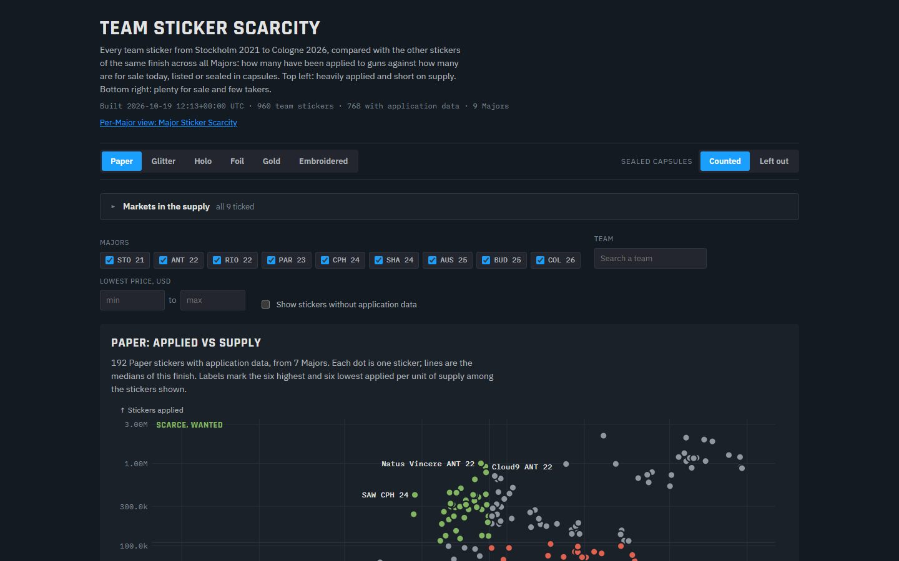
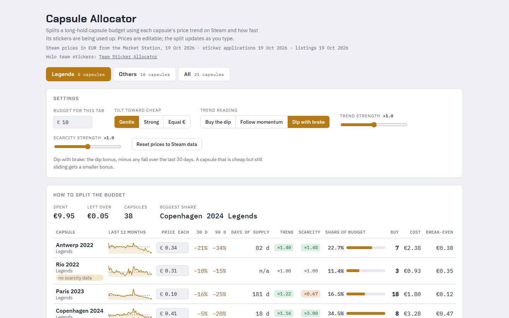

Esport · analyse de donnéesdata analysis
Major Sticker Scarcity et& Capsule Allocator
Quels stickers d'équipe se raréfient ? L'étude porte sur 960 stickers de 9 Majors, de Stockholm 2021 à Cologne 2026, et compare ceux qui ont été collés sur des armes, donc retirés du marché pour de bon, à ceux qui sont encore en vente. Which team stickers are becoming scarce? 960 stickers from 9 Majors, Stockholm 2021 to Cologne 2026, comparing those applied to guns (gone from the market for good) with those still for sale.



Le besoinThe need
Personne ne publie le nombre de stickers en circulation : Valve ne communique rien. Pour savoir lesquels deviennent rares, il fallait reconstituer l'offre et la demande à partir de ce qui s'observe.Nobody publishes how many stickers exist: Valve discloses nothing. To find out which ones are getting scarce, supply and demand had to be rebuilt from what can be observed.
Ce que j'ai construitWhat I built
- Une vue par Major et par finition (Paper, Glitter, Holo, Foil, Gold, Embroidered), et une vue par sticker en nuage de points.A per-Major, per-finish view (Paper, Glitter, Holo, Foil, Gold, Embroidered) and a per-sticker scatter view.
- Une offre additionnée sur 9 places de marché, capsules encore scellées comprises ; chaque marché peut être retiré du calcul.Supply summed across 9 marketplaces, sealed capsules included; each market can be left out of the count.
- Le Capsule Allocator, qui répartit un budget entre 21 capsules selon la tendance de leur prix et la vitesse à laquelle leurs stickers sont consommés. La répartition se recalcule à chaque saisie.The Capsule Allocator, which splits a budget across 21 capsules by price trend and by how fast their stickers are being used up. The split updates as you type.
Comment ça marcheHow it works
CollecterCollect
La liste des stickers vient d'une base ouverte, les applications d'un service de suivi interrogé à un rythme qui respecte ses limites, les annonces de 9 places de marché.The sticker list comes from an open database, applications from a tracking service queried within its rate limits, listings from 9 marketplaces.
CroiserCombine
Un script Python rapproche les trois sources sticker par sticker et convertit les capsules scellées en stickers.A Python script matches the three sources sticker by sticker and converts sealed capsules into stickers.
RafraîchirRefresh
Les pages se reconstruisent à la demande, avec la date de chaque relevé affichée en tête.The pages are rebuilt on demand, with the date of each data pull shown at the top.
La démo est une copie figée : les données datent du 19/10/2026.The demo is a frozen copy: data as of 19 Oct 2026.